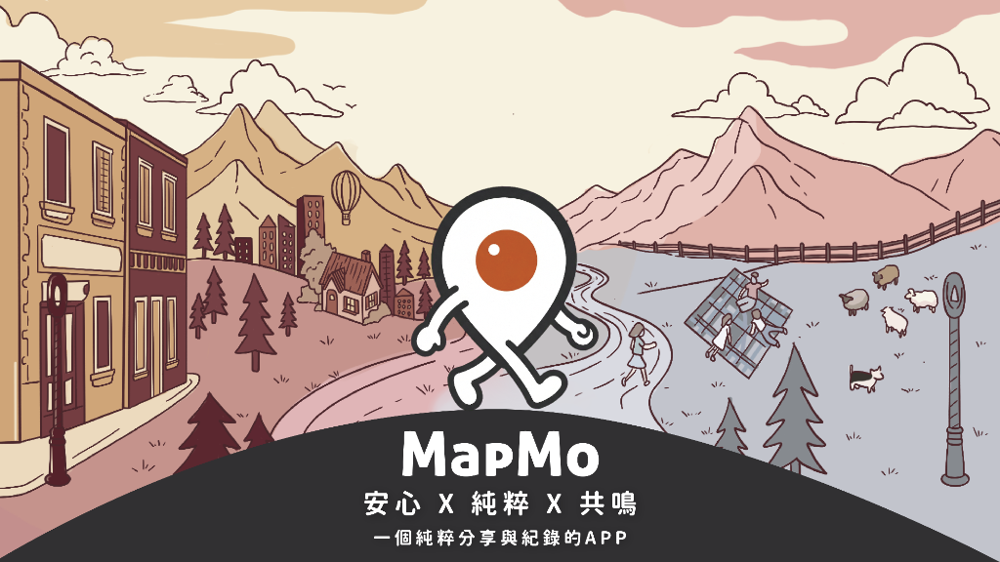
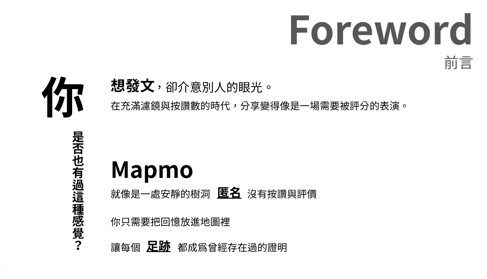

對風格不對人
AI 風格品味推播
依 ❤️ 收藏與貼文演算 16 維視覺風格向量，推薦審美契合的城市足跡與百分比理由，徹底反肉搜追蹤。

點選任意心聲字卡，拆閱 MapMo 樹洞溫柔信箋 ✦
「如果大家覺得不好笑，只有我覺得好笑，我還要 Po 嗎？」
「主管／同事／家人好像看得到，發摯友好了...算了，不發了。」
「他們是不是看到我的限時動態，在討論我啊？」
「好麻煩喔...」
「這句話會不會太情緒勒索？我換個委婉一點的說法好了……算了，不發了。」
「我這樣發是不是會被說跟風啊？」
「都過十分鐘了，怎麼連一個愛心都沒有？」
「如果大家覺得不好笑，只有我覺得好笑，我還要 Po 嗎？」
「主管／同事／家人好像看得到，發摯友好了...算了，不發了。」
「他們是不是看到我的限時動態，在討論我啊？」
「好麻煩喔...」
「這句話會不會太情緒勒索？我換個委婉一點的說法好了……算了，不發了。」
「我這樣發是不是會被說跟風啊？」
「都過十分鐘了，怎麼連一個愛心都沒有？」
「我其實沒有想給ＸＸＸ看耶...但是他身邊的朋友都會看到，這樣不就發現我隱藏他了...」
「這篇貼文數據好差喔，我要刪掉。」
「如果沒人按讚怎麼辦？ 💬」
「那個人看過了嗎？……看完了，但他沒按愛心，是不是覺得我很無聊？」
「我這樣寫是不是容易被罵啊？」
「發這個會不會被覺得在炫耀啊？」
「好煩喔，到底要選哪一首音樂...」
「我其實沒有想給ＸＸＸ看耶...但是他身邊的朋友都會看到，這樣不就發現我隱藏他了...」
「這篇貼文數據好差喔，我要刪掉。」
「如果沒人按讚怎麼辦？ 💬」
「那個人看過了嗎？……看完了，但他沒按愛心，是不是覺得我很無聊？」
「我這樣寫是不是容易被罵啊？」
「發這個會不會被覺得在炫耀啊？」
「好煩喔，到底要選哪一首音樂...」
「為什麼大家限動都很精彩，只有我在這裡發無病呻吟的東西。」
「這樣發會不會讓人覺得我在討拍啊？」
「我只是想抒發，到時候又一堆人來問，好煩喔，不想回。」
「我文案這樣寫會不會很裝啊？」
「我為什麼每次半夜腦波弱都要發這種東西？明天早上一定後悔死。」
「喔！有人問我『還好嗎？』，但是我只是想抒發而已，早知道就不發了。」
「為什麼大家限動都很精彩，只有我在這裡發無病呻吟的東西。」
「這樣發會不會讓人覺得我在討拍啊？」
「我只是想抒發，到時候又一堆人來問，好煩喔，不想回。」
「我文案這樣寫會不會很裝啊？」
「我為什麼每次半夜腦波弱都要發這種東西？明天早上一定後悔死。」
「喔！有人問我『還好嗎？』，但是我只是想抒發而已，早知道就不發了。」

想發文，卻介意別人的眼光。
在充滿濾鏡與按讚數的時代，分享變得像是一場需要被評分的表演。
MapMo 就像是一處安靜的樹洞
你只需要把回憶放進地圖裡
讓每個 足跡 都成為曾經存在過的證明
沒人知道你是誰。
沒有按讚、沒有評論，
只有安靜的空間。
把回憶留在地圖上，
形成你的專屬空間。
使用情緒分類每個回憶，讓打開地標就像回到那一天。
保留零讚數、零評論的純粹，為每一次漫步與記錄加入更有溫度的智慧感知。
依 ❤️ 收藏與貼文演算 16 維視覺風格向量，推薦審美契合的城市足跡與百分比理由，徹底反肉搜追蹤。
頂部「探索・氛圍」即時彙整街區 1 公里內匿名情緒比例與主調，感受周邊集體心情脈動並隱去門牌。
重返自己 7 天前曾親手留下的真實足跡 80 公尺內時，喚醒當時心情卡片，讓過去與現在重新對話。
同地點多筆足跡自動收合為數字徽章不重疊，點開抽屜即可橫向翻閱並二次過濾喜怒哀樂無。
快門即時鎖定真實 GPS 蓋上不可竄改綠標（1.0x~5.0x 轉盤變焦），上傳完即贈時空拍立得憑證。
上傳與檢舉雙階段 AI 影像審查（附防誤殺斷路器），並可自訂「避開特定情緒標籤」與私人 ❤️ 收藏。
點選下方分頁卡片，體驗全新的 MapMo 多頁式網站架構。
整合實機畫面、AI 品味推播、街區氛圍、故地重遊與雙層安全防護，探索完整 App 進化。
深入了解探索與閱讀來自不同地方的故事與回憶，把情感留在地圖上。
前往查看了解 MapMo 團隊初衷，遇見專案背後的創作者與設計理念。
認識團隊有任何建議或團隊合作想法？歡迎隨時與我們取得聯繫。
聯絡團隊11 題情境心理測驗，測出你是「潛水觀察派」、「備忘錄日記派」、「悄悄發佈派」、「精修完美派」還是「隨心所欲派」